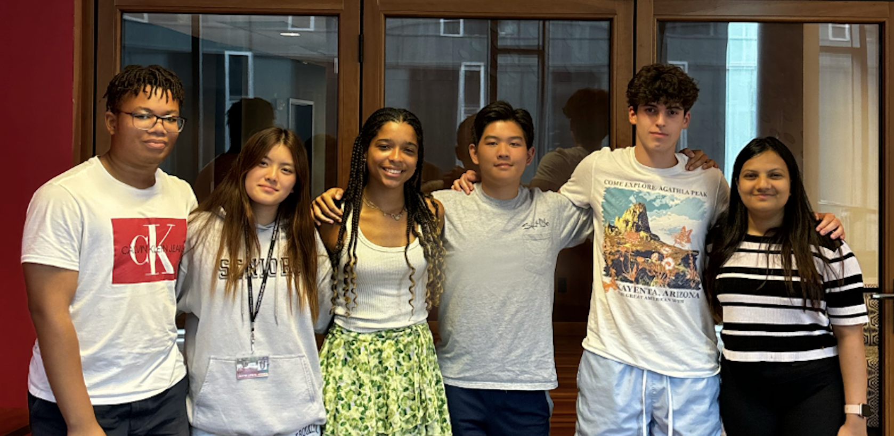

About
Throughout the AI Scholars program, a group of 5 students created an AI image classification model to determine eye diseases using a dataset of retina scans. Alongside professors and a graduate student at Carnegie Mellon University, we created a goal in striving to provide cheap and accessible medical exams in areas where healthcare is limited. We coded an AI model in an attempt to solve problems of inaccessibility and the risk of death through eye diseases. 1.1 billion people in the world suffer from visual impairments, and retinal diseases are the leading cause for blindness in low-income countries. There’s only 200,000 Ophthalmologists worldwide compared to its population of over 8 billion people.
How the Model Works
The dataset we trained our models with is called the Retinal Fundus Multi-Disease Image Dataset. We trained our models with 1,920 images, split 80:20 between the training images and validation images, and tested with 640 unseen images. The dataset was collected at Nanded, India with retinal fundus cameras. We use python convolutional neural networks (CNN), to run through the training data repeatedly and come up with the optimal values of each weight and bias. They use the highlighted areas of the filtered images to determine the weight those specific pixels need to have. We ran our data through both binary and multi-classification models, determining if they are diseased or not diseased, while also moving on to determining which disease it is. By training our dataset, we received varying levels of accuracy based on the hyperparameters we used. Although it is still an ongoing training process, our model is able to learn how to classify different retina scans and its diseases.
Contact Us

Malik Traore -- malikt@andrew.cmu.edu
Carmen Ung -- cung@andrew.cmu.edu
Emmy Sumpter -- esumpter@andrew.cmu.edu
Tommy Weng -- tjweng@andrew.cmu.edu
Juan Cruz Field -- jcfield@andrew.cmu.edu
Peya Mowar -- pmowar@andrew.cmu.edu